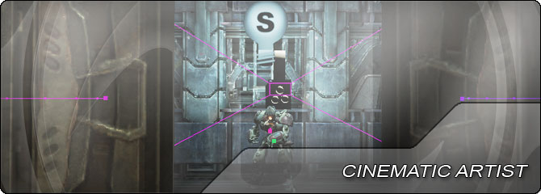

UDN
Search public documentation:
CinematicArtistHomeJP
English Translation
中国翻译
한국어
Interested in the Unreal Engine?
Visit the Unreal Technology site.
Looking for jobs and company info?
Check out the Epic games site.
Questions about support via UDN?
Contact the UDN Staff
中国翻译
한국어
Interested in the Unreal Engine?
Visit the Unreal Technology site.
Looking for jobs and company info?
Check out the Epic games site.
Questions about support via UDN?
Contact the UDN Staff
UE3 ホーム > シネマティック アーティスト
シネマティック アーティスト

- Matinee ユーザーガイド - Matinee エディタのためのユーザーガイド。
- Matinee トラックのリファレンス - Matinee で使用可能な全トラックに関する完全なリファレンス。
- Matinee AnimControl トラック - Matinee における AnimControl トラックを使用する方法について詳細に解説。
- カーブ エディタ ユーザーガイド - 「Unreal Engine 3」のカーブ エディタのためのユーザーガイド。
- InterpActors の使用 - Kismet を使用して動きのあるアクタ (mover ムーバー) を作成する方法について。
- Kismet ユーザーガイド - Kismet エディタのためのユーザーガイド。
- Kismet リファレンス - Kismet のあらゆるアクション、条件、イベント、変数のための完全なリファレンス。
- Kismet のサンプル - 役に立つテクニック例とサンプル シーケンスについて。
- Crowd System - 「Unreal Engine 3」のクラウドシステムの概要。
- シネマティックの作成 - 「Unreal Engine 3」を使用してインゲームのシネマティックとカットシーンを作成する方法について解説。
- シネマティックおよびゲームプレイのキャプチャ - インゲームのシネマティックとゲームプレイのフッテージ (プレイ経過) をキャプチャする方法について解説。
- ムービーキャプチャ - Matinee またはインゲームのフッテージ (プレイ経過) を、 AVI ビデオまたはイメージシーケンスにキャプチャする方法について解説。
- フルスクリーン ムービー システム - フルスクリーン ムービー再生システムの概要。
- アニメーション システムの概要 - 「Unreal Engine」のアニメーションシステムの概要。
- AnimSet エディタ ユーザーガイド - AnimSet エディタの使用方法に関するガイド。
- アニメーションツリー エディタ ユーザーガイド - アニメーションツリーの使用方法に関するガイド。
- アニメーション圧縮ダイアログ - ゲーム内でアニメーション圧縮を生成、利用する方法について。
- アニメーション圧縮アルゴリズム - 「Unreal Engine 3」のアニメーション圧縮アルゴリズムの概要。
- ポストプロセス エディタ ユーザーガイド - 「Unreal Engine 3」におけるノードベースのポストプロセス エディタについて概説。
- ポストプロセス エフェクトのリファレンス - あらゆるポストプロセス エフェクトについて解説。
- ブルーム - ブルーム (発光効果) のポストプロセス エフェクトについて解説。
- カラーグレーディング - トーンマッピングとカラー修正のポストプロセス エフェクトについて解説。
- モーションブラー - 「Unreal Engine 3」で使用されているモーションブラーについて解説。
- モーションブラー ソフトエッジ - モーションブラーとともにソフトエッジを使用する方法について解説。
- モーションブラー スキニング - 骨格メッシュに関するモーションブラーについて解説。
- 放射 (ラジアル) ブラー - 放射ブラーとそのエフェクトについて解説。